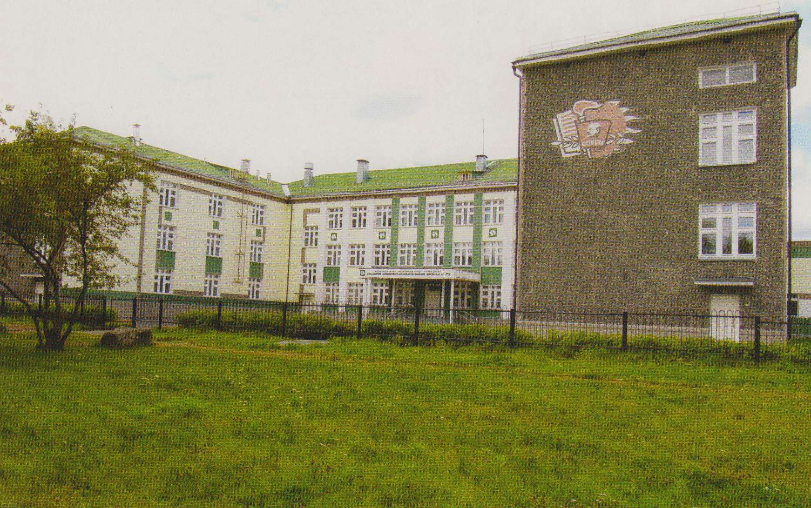

72 школа  Google Maps
Google Maps

Перелистаем страницы нашего школьного семейного альбома.
Народная мудрость гласит: « Костер, зажженный на вершине горы, не согреет тех, кто у её подножия». И счастье наше, что живут среди нас те, кто не говорит о добре, а творит его, кто разводит свой огонь так, чтобы люди могли у него согреться. Благодаря именно таким людям родилась и живет наша школьная семья.
Школа №72 была сдана в 1962 году – досрочно на 8 месяцев, поэтому День Рождения школы не 1 сентября, а 12 января.
Первым директором школы была Лоптева Ксения Яковлевна.Из протокола 1-ого педсовета: в первый учебный год было 23 класса, 834 ученика. По итогам 2-ой четверти 102 ученика не успевают.Прогресс налицо: в 2006 году по итогам 2-ой четверти не успевают всего 4 ученика.При Ксении Яковлевне школа по итогам подготовки к 1 сентября заняла 1-ое место и была награждена путевкой в Москву, весь коллектив.
В 1973 году пост рулевого школы заняла Алябьева Галина Васильевна. Начала свою трудовую деятельность завучем в 75 школе, затем была переведена директором в нашу школу. При Галине Васильевне школа 1-ая в городе перешла на кабинетную систему. Была передовой во всех городских мероприятиях. И еще один знаменательный факт: в 1973 году состоялась встреча 3-ех директоров школы. В кабинете: Ксения Яковлевна – прошлый директор - передавала все полномочия Галине Васильевне – настоящему директору - при этом была Дронкина Валентина Михайловна - будущий директор! С 1975 года школа стала средней, и ученики стали получать документ о полном среднем образовании.
И вот 1983 год.На должность директора назначена Дронкина Валентина Михайловна.23 года посвятила она созданию этого дома, нашей школьной семьи, зажгла очаг, к которому тянутся люди, который согревает и объединяет людские души.
Жизнь прожить не поле перейти, и это хорошо знают педагоги. Педагог – самая беспокойная профессия. Она требует с первого шага - зрелости, и до последнего шага – бодрости. И мужества на всем пути. Без верности своему делу нет настоящего педагога. Щедрость души, любовь и настоящий интерес к делу, готовность отдать все свои силы и знания – вот личные качества педагогов, работавших и работающих в нашей школе.
С августа 2006 года директором школы стал Паромонов Алексей Павлович. На его плечи легла нелегкая работа по капитальному ремонту школы. Теперь наша школа стала красивая, светлая и удобная. Школа вышла на путь современного развития.
В марте 2010 года эстафету руководства школой принял новый директор Тетерин Альберт Евгеньевич. Школа работает в различных направлениях. А главное в ней комфортно и педагогам и ученикам.
Зырянова Раиса Платоновна - учитель истории, всегда передовой, идейный классный руководитель. Хорошая хозяйка своего кабинета. Сухинина Раиса Ивановна - Отличник народного просвещения, выучивала и приучала к дисциплине каждого ученика. Торопицина Валентина Ивановна – учитель начальных классов. Отличник народного Просвещения. Душа детей и их родителей. Удинцева Фаина Яковлевна – учитель русского языка и литературы, председатель объединенного месткома, отвечала за работу с ветеранами. Давыденко Галина Алексеевна – учитель ИЗО и черчения. Отличник народного образования, душевный, гостеприимный человек. Коломина Павла Алексеевна – Отличник народного образования, неравнодушный хороший человек, благодаря ей все были подписчиками и читателями периодических изданий. Злобина Алевтина Николаевна – Учитель начальных классов, воспитатель группы продленного дня, лаборант. Всегда в школе и всегда с детьми. Яблочкина Галина Ивановна – учитель русского языка и литературы, по словам детей, первоклассный учитель. Макагонов Михаил Федорович – учитель НВП, душевный, улыбчивый человек. Именно он научил всех учителей надевать противогазы, стрелять. Мы были самыми подготовленными к военным действиям. Прибавкина Нина Васильевна – учитель начальной школы, отличный педагог и душевный человек. Иванюшкина Тамара Сергеевна – отличник народного просвещения, учила детей строго, но справедливо. Гордеева Людмила Борисовна – человек, имеющий 50 лет педагогического стажа и все это в нашей школе. Многолетний и упорный труд отличает этого человека. Спиридонова Валентина Алексеевна – учитель иностранного языка, завуч школы, педагог от бога. Лякишева Нина Александровна – учитель начальных классов, добросовестный, отзывчивый человек. Недокушева Вера Павловна – учитель. Секретарь партийной организации от политинформации до вечеринок – все могла организовать. Гоголева Анфиса Константиновна – добросовестный, порядочный человек, мы жили с ней как за каменной стеной. Широкова Наталья Павловна – учитель русского языка и литературы, добросовестный учитель, не умеющий работать на авось. Милькова Инна Алексеевна – женщина энергичная, сохранившая юношеский задор, всегда была на пике моды. Колупанова Фаина Игнатьевна – работала на группе продленного дня. Демина Людмила Федоровна – учитель химии, награждена грамотой министерства просвещения.
А время неумолимо бежит вперед, чередуя черные и белые полосы.
Так много их мальчишек и девчонок ушло из школы, чтобы своими успехами прославить город наш на всю Россию. У каждой эпохи свои герои, своя история, горящая живым огнем любви и преданности своему делу, искренним желанием дарить окружающим радость. Сегодня наш школьный дом уютный и красивый, и в нём каждый ребенок чувствует себя уверенно, способен сам решать, изменяться, действовать, быть реальным творцом себя и окружающегося мира. Чем живет наш школьный дом сегодня?
Школьный дом - это содружество детей и взрослых: учеников, учителей и родителей. Это радость современного творческого созидания. Школьный дом - это кузница знаний и мастерская дум, где ребенка окружает красота, игра, фантазия, творчество. Школьный дом – это поиск смысла жизни, профессионального самоопределения; поиск идеалов добра, любви, правды и красоты.